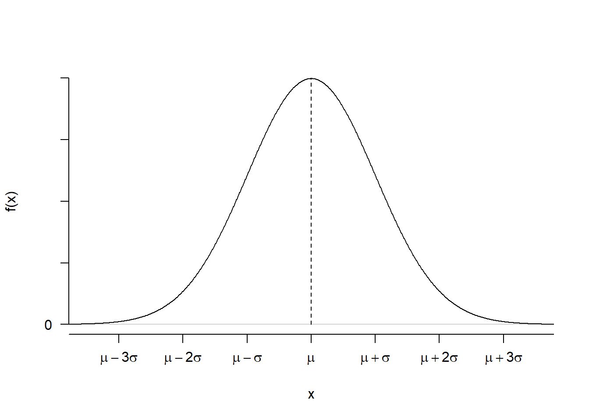
1 Normal Dağılım
\[ \renewcommand{\E}{\mathbb{E}} \renewcommand{\P}{\mathbb{P}} \renewcommand{\Var}{\mbox{Var}} \renewcommand{\Cov}{\mbox{Cov}} \renewcommand{\plim}{\mbox{plim}} \renewcommand{\cd}{\overset{d}{\longrightarrow}} \renewcommand{\cp}{\overset{p}{\longrightarrow}} \renewcommand{\adistr}{\stackrel{a}{\sim}} \renewcommand{\ind}{1\hspace{-2.5mm}{1}} \]
Normal dağılım istatistikte en önemli ve en yaygın kullanılan olasılık dağılımlarından biridir. Ekonomi, işletme, finans ve diğer sosyal bilimlerde, birçok değişkenin dağılımı belirli koşullar altında normal dağılıma uyar. Normal dağılım, anket verilerinden üretim süreçlerindeki kalite kontrol metriklerine kadar geniş bir uygulama alanına sahiptir. Örneğin, bir finansal portföydeki yatırım getirileri, belirli varsayımlar altında normal dağılıma uyabilir ve bu durum risk analizlerinde önemli bir temel oluşturur. İşletmelerde ise üretim hatlarındaki ürün boyutları veya ağırlıkları genellikle normal dağılıma uygunluk gösterir, bu da kalite yönetiminde önemli bir rol oynar.
Bu bölümde, normal dağılımın temel özelliklerini inceleyeceğiz. Olasılık yoğunluk fonksiyonu ve birikimli dağılım fonksiyonunu tanıtacak, normal dağılımı kullanarak olasılık hesaplamalarının nasıl yapılacağını göstereceğiz.
1.1 Olasılık Yoğunluk Fonksiyonu
Tanım 1.1 Sürekli rassal değişken \(X\), ortalaması \(\mu\) ve varyansı \(\sigma^2\) olan bir normal dağılıma sahipse olasılık yoğunluk fonksiyonu \[ f(x;\mu,\sigma^2)=\frac{1}{\sigma\sqrt{2\pi}}\exp\left(-\frac{1}{2\sigma^2}(x-\mu)^2\right),\quad -\infty <x<\infty \tag{1.1}\] olarak tanımlanır. Burada \(\exp(a)\equiv e^a\) üstel fonksiyonu temsil etmektedir. Bir yoğunluk fonksiyonunda bilinmeyen \(x\) rassal değişkenidir. Ancak dağılımın özellikleri (şekli, simetrisi, vb) rassallık içermeyen sabit sayılar olarak tanımlanan parametrelere de bağlı olabilir. Normal dağılımın bu iki parametreye bağlı olduğunu göstermek için \(f((x;\mu,\sigma^2)\) olarak yazılmıştır. Burada \(\mu\) ve \(\sigma^2\)’nin bilindiğini, ancak \(x\)’in bilinmediğini varsayıyoruz.
Normal dağılıma uyan bir rassal değişkeni ifade etmenin yaygın ve kısa bir yolu aşağıdaki gibi yazmaktır: \[ X\sim N(\mu,~\sigma^2) \tag{1.2}\] Bu gösterim şu şekilde okunur: \(X\) ortalaması \(\mu\) ve varyansı \(\sigma^2\) olan bir normal dağılımı takip eder. Bu notasyon, dağılımın bağlı olduğu parametreleri daha açık göstermekle beraber, \(\mu\) ve \(\sigma^2\)’nin aldığı değerlere bağlı olarak sonsuz sayıda normal dağılım tanımlanabileceğinin altını çizer.
Şekil 1.1 bu yoğunluk fonksiyonunun grafiğini göstermektedir. Normal yoğunluk ortalama \(\mu\) çevresinde simetrik dağılır ve biçiminden dolayı çan eğrisi olarak da bilinir. Bu dağılım ile \(X\) rassal değişkenine ilişkin çıkarımlar yapılabilir. Normal yoğunluk fonksiyonu kullanılarak \(X\)’in beklenen değerinin \(\E(X)=\mu\), varyansının \(\Var(X)=\sigma^2\) ve standart sapmasının \(\sigma\) olduğu gösterilebilir. Ortalama ve varyans biliniyorsa \(X\) değişkenine ilişkin aralık olasılıkları, izleyen alt bölümlerde göreceğimiz gibi, kolayca hesaplanabilir.
Normal dağılımın ortalamasını ifade eden \(\mu\) konum ya da lokasyon parametresi olarak da bilinir. Varyansı sabit tutarak ortalamayı değiştirdiğimizde dağılımın şekli bozulmadan sağa ya da sola kaydığı görülebilir (bkz. Şekil 1.2 (a)). Dağılımın şeklinden dolayı çan eğrisi olarak da isimlendirilir.
Ölçek ya da yayılım parametresi olan \(\sigma^2\) dağılımın şeklini belirler. Bu kez ortalamayı sabit tutup varyansı değiştirdiğimizde yayılımın değiştiğiniz görebiliriz (bkz. Şekil 1.2 (b)). Varyans arttıkça aralık genişler ve yoğunluk fonksiyonu yayvanlaşır.
Örnek 1.1 Bir ülkede yaşayan bireylerin IQ test skorları ortalaması 100 ve standart sapması 15 olan bir normal dağılıma uymaktadır. \(X\) IQ puanı olmak üzere \[ X\sim N(100,~15^2) \] yazabiliriz. Şekil 1.3 bu değişkenin yoğunluk grafiğini göstermektedir. Beklenen değer \(\E(X)=100\equiv \mu\) çevresinde yoğunluğun en yüksek değerlere sahip olduğu kolayca görülebilir. Bu bireylerin IQ skorlarının ortalama çevresinde daha fazla yoğunlaştığını gösterir. Ortalamanın yanı sıra standart sapma, yani değişkenlik katsayısının değeri de önemlidir. Ortalama sabitken \(\sigma\) arttıkça dağılım daha yayvan olur.
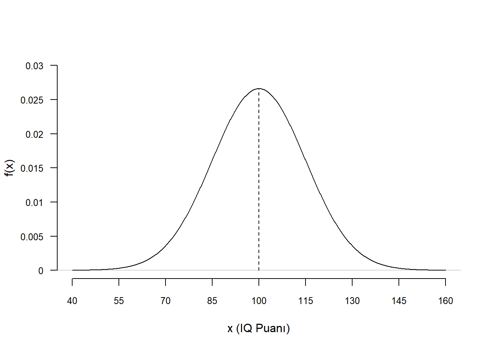
IQ skorunun en yüksek yoğunluk değerine ortalamada ulaştığını söylemiştik. \(f(x)\) değerini hesaplamak istersek: \[
f(x;\mu=100,\sigma^2=15^2)=\frac{1}{15\sqrt{2\pi}}\exp\left(-\frac{1}{2}
\left( \frac{100 - 100}{15} \right)^2\right) =\frac{1}{15\sqrt{2\pi}} e^{0}=0.0266
\] buluruz. R ile normal dağılım yoğunluklarını hesaplamak için dnorm() fonksiyonu kullanılabilir:
dnorm(x = 100, # yoğunluğunu hesaplamak istediğimiz x değeri
mean = 100, # ortalama, mu
sd = 15 # standart sapma, sigma
)[1] 0.02659615Benzer şekilde ortalamanın 1 standart sapma üstünde ve altındaki yoğunluk değerleri
dnorm(115, 100, 15) # 100 + 15 [1] 0.01613138dnorm(85, 100, 15) # 100 - 15[1] 0.01613138Ortalamadan daha fazla uzaklaştıkça yoğunluk değerleri azalır.
Uygulamada genellikle yoğunluğun belirli bir noktadaki değeriyle değil aralık olasılıklarıyla ilgileniriz. Örneğin, rassal seçilmiş bir bireyin IQ skorunun ortalamanın 1 standart sapma uzağında, yani 85 ile 115 arasında olma olasılığı kaçtır? İnsanların yüzde kaçının IQ skoru ortalamanın en fazla 2 standart sapma uzağındadır? Buna benzer soruları cevaplayabilmek için olasılık yoğunluk fonksiyonunu kullanarak aşağıdaki gibi belirli integralleri hesaplayabilmemiz gerekir:
\[ \P(a\leq X \leq b)=\int_a^b \frac{1}{\sigma\sqrt{2\pi}}\exp\left(-\frac{1}{2} \left( \frac{x - \mu}{\sigma} \right)^2\right)~dx \] Ancak normal dağılımın olasılık yoğunluk fonksiyonunun integrali, yani belirli bir aralıktaki olasılığı bulmak için gereken integral, genellikle kapalı formda çözülemez. Bu, fonksiyonun doğası gereği ortaya çıkan karmaşık matematiksel ifadelerden kaynaklanır. Normal dağılımın yoğunluk fonksiyonu, Gauss fonksiyonu olarak da bilinir (Gaussian dağılım) ve üstel bir ifade içerir. Bu tür fonksiyonların integralleri, genellikle el ile çözülemeyecek kadar karmaşıktır.
Aralık olasılıklarını hesaplamanın kolay bir yolu belirli normal dağılım için bir değeri aşmama olasılığını veren birikimli dağılım fonksiyonunu, \(F(x)\), bulmaktır. Böylece, daha önce gördüğümüz gibi, aralık olasılıklarını \[ \P(a\leq X \leq b) = F(b)-F(a) \] ile hesaplayabiliriz. Bilgisayar yardımıyla ya da özelleştirilmiş tablolar kullanarak ilgilendiğimiz aralık olasılıklarını nümerik yöntemlerle hesaplayabiliriz. İzleyen alt bölümlerde bu konuları ele alacağız.
1.2 Birikimli Dağılım Fonksiyonu
Tanım 1.2 Normal dağılımın birikimli dağılım fonksiyonu (bdf), \(X\) rassal değişkeninin belirli bir \(x\) değerini aşmama olasılığını, \(\P(X \leq x)\), verir. Matematiksel olarak, birikimli dağılım fonksiyonu \(F(x)\) şu şekilde tanımlanır:
\[ F(x) = \P(X \leq x) = \int_{-\infty}^{x} f(t)~dt \tag{1.3}\]
Burada \(f(t)\) normal dağılımın olasılık yoğunluk fonksiyonudur: \[
f(t) = \frac{1}{\sigma \sqrt{2\pi}} \exp\left(-\frac{1}{2}\left(\frac{t-\mu}{\sigma}\right)^2\right)
\tag{1.4}\] Birikimli dağılım fonksiyonu, yoğunluk fonksiyonunun \(-\infty\) ile \(x\) arasında kalan alanını hesaplar. Bu integralin kapalı formda bir çözümü olmadığından, bdf hesaplamaları genellikle sayısal yöntemlerle yapılır. R’da bu hesaplamalar pnorm() fonksiyonu ile yapılabilir.
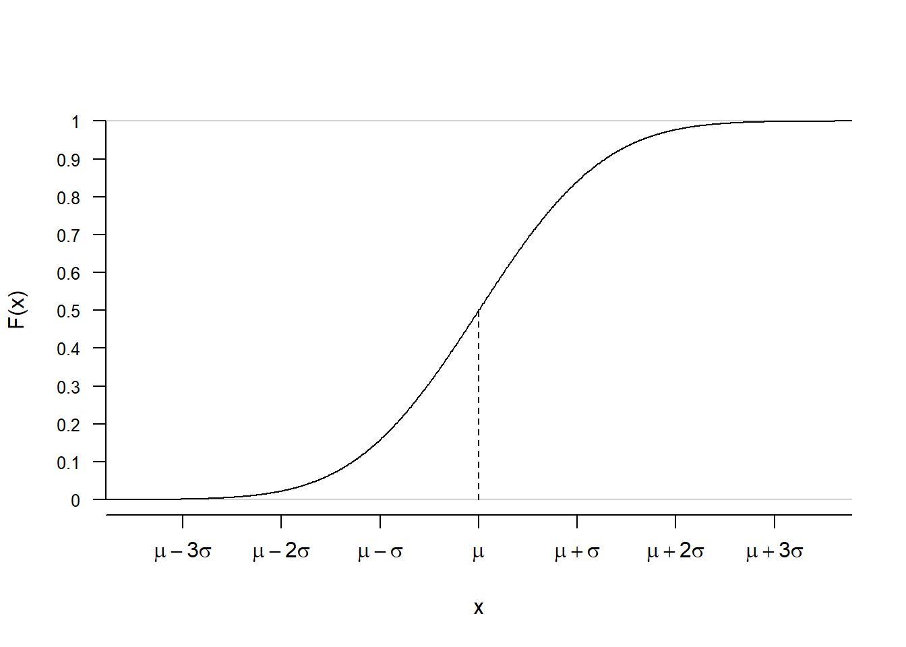
Şekil 1.4 Normal birikimli dağılım fonksiyonunu göstermektedir. \(F(x)\)’in her zaman 0 ile 1 arasında değerler aldığına ve \(x\) arttıkça monoton bir şekilde arttığına (azalmadığına) dikkat ediniz.
Örnek 1.2 IQ puanlarının normal dağılım gösterdiğini varsayalım: \(X \sim N(100,~ 15^2)\). Rassal seçilmiş bir bireyin IQ puanının 115’ten küçük olma olasılığı, \(\P(X\leq 115)\), kaçtır? 85’ten küçük olma olasılığı kaçtır? 85 ile 115 arasında olma olasılığı kaçtır?
Çözüm
115’ten küçük olma olasılığı normal birikimli dağılım fonksiyonundan hareketle bulunabilir: \[
F(115) = \int_{-\infty}^{115} f(t)~dt = \int_{-\infty}^{115} \frac{1}{15 \sqrt{2\pi}} \exp\left(-\frac{1}{2}\left(\frac{t-100}{15}\right)^2\right) dt
\] Bu integral R’da pnorm() fonksiyonu ile hesaplanabilir. Başka bir yol standart normal dağılım tablolarının kullanılmasıdır. Bunu daha sonra inceleyeceğiz.
pnorm(115, # ilgilendiğimiz x değeri
mean = 100, # mu
sd = 15 # sigma
)[1] 0.8413447Bu sonuca göre, bireylerin yaklaşık %84’ünün IQ skoru 115’den küçüktür diyebiliriz. Şekil 1.5 bu olasılığa karşılık gelen oyf’nin altındaki taranmış bölgeyi ve normal birikimli dağılım fonksiyonunu göstermektedir.
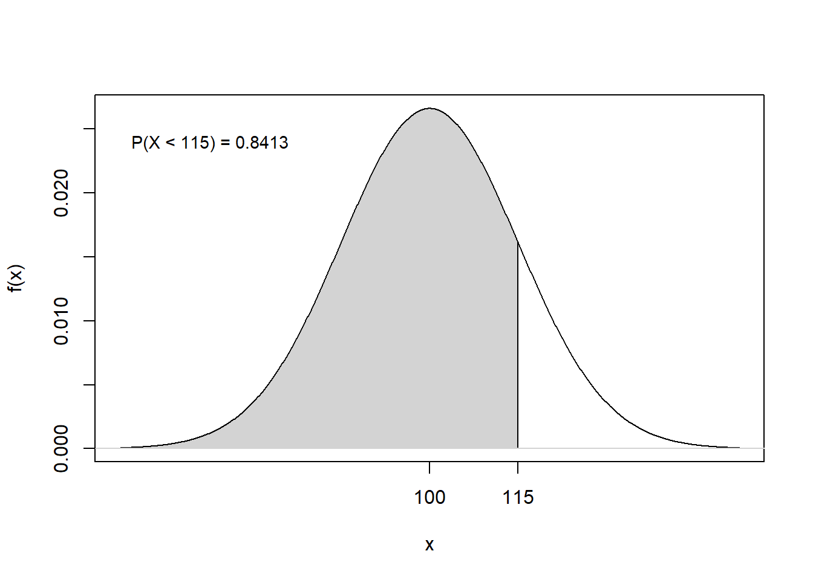
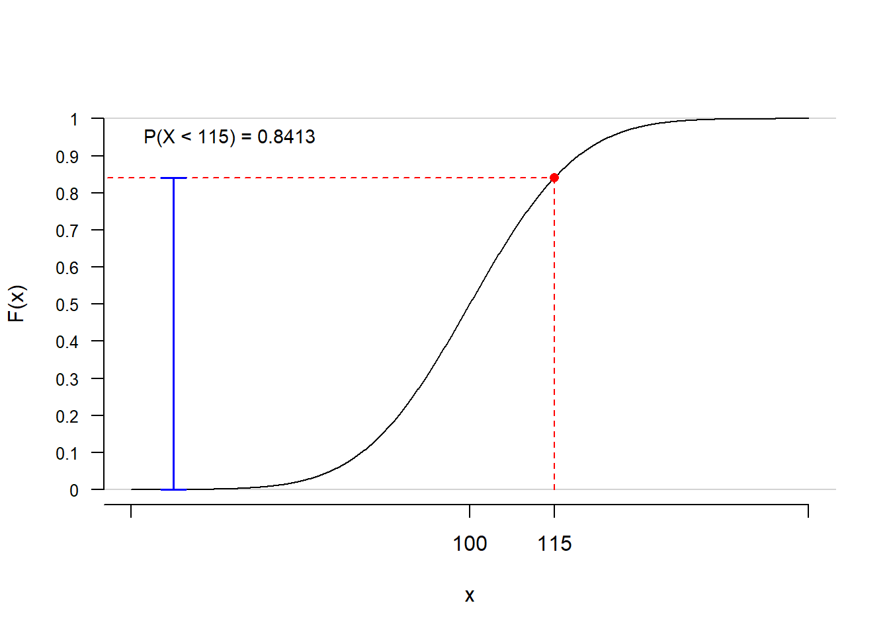
Yoğunluğun altında kalan alan 1 olduğuna göre rassal seçilmiş birinin IQ’sunun 115’den fazla olma olasılığı \[ \P(X>115) = 1-F(115)=1-0.8413=0.1587 \] yani yaklaşık %15.87 olur.
Benzer şekilde IQ skorunun 85’den küçük olma olasılığını hesaplamak için \[
F(85) = \int_{-\infty}^{85} f(t)~dt = \int_{-\infty}^{85} \frac{1}{15 \sqrt{2\pi}} \exp\left(-\frac{1}{2}\left(\frac{t-85}{15}\right)^2\right) dt
\] integralini R pnorm() fonksiyonu ile hesaplayalım:
# F(85) = P(X <= 85)
pnorm(85, 100, 15)[1] 0.1586553
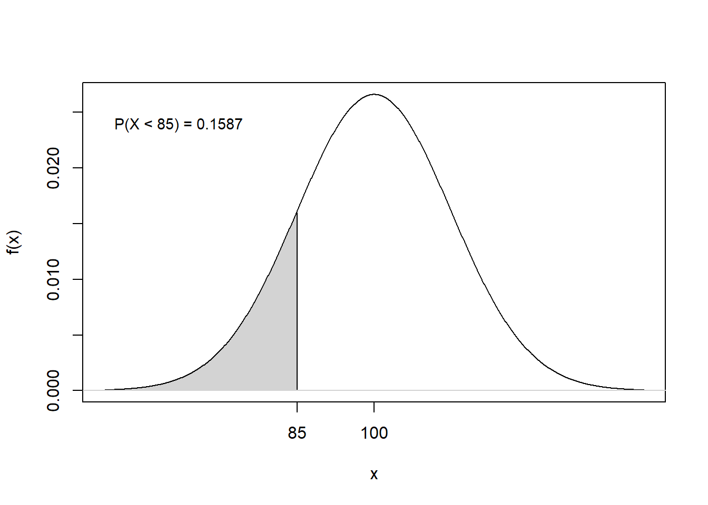
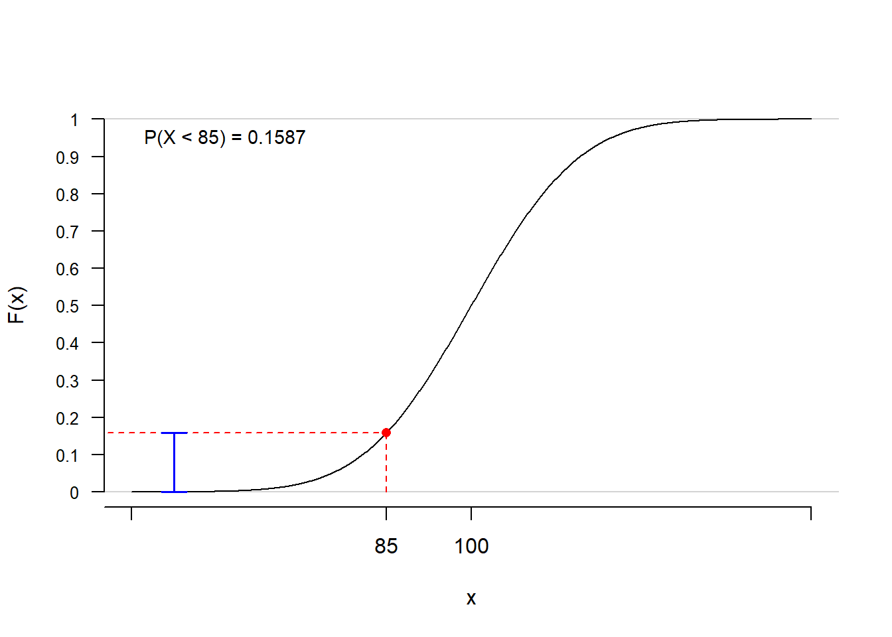
Böylece \(a=85\) ve \(b=115\) olmak üzere aralık olasılığı \[ \P(85 \leq X \leq 115) = F(115)-F(85) = 0.8413-0.1587=0.6826 \] yaklaşık %68.26 olur. Şekil 1.7 bu aralık olasılığını oyf ve bdf üzerinde göstermektedir.
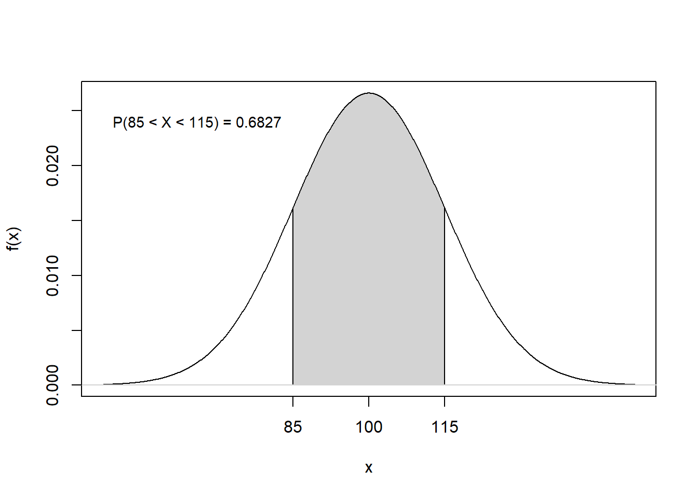
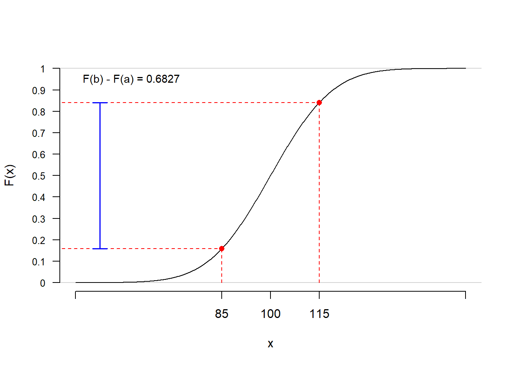
Bu hesaplamalar sonucunda \(N(100,~15^2\) dağılımına uyan IQ puanının ortalamanın en fazla 1 standart sapma uzağında olma olasılığı yaklaşık %68.26’dır: \[ \P(\mu-\sigma <X<\mu+\sigma)=\P(85<X<115)=0.6826 \]
Benzer şekilde 2 standart sapma içinde olma olasılığını hesaplayalım:
# F(70) = P(X <= 70), mu - 2*sigma = 70
pnorm(70, 100, 15)[1] 0.02275013# F(130) = P(X <= 130), mu + 2*sigma = 130
pnorm(130, 100, 15)[1] 0.9772499Buradan hareketle IQ’nun 70’den düşük olma olasılığının %2.28, ve 130’dan küçük olma olasılığının %97.72 olduğunu söyleyebiliriz. Öyleyse bu aralık içinde olma olasılığı \[ \P(70 \leq X \leq 130) = F(130)-F(70) = 0.9772-0.0228= 0.9544 \] yaklaşık %95 olur.
1.3 Kantil fonksiyonu
Tanım 1.3 \(Q(p)\) ile göstereceğimiz kantil fonksiyonu verilmiş bir olasılık \(p\) için \(F(x)\geq p\) ifadesini sağlayan \(x\) değerini verir. Bunu birikimli dağılım fonksiyonunun tersi olarak düşünebiliriz:
\[
Q(p)=F^{-1}(p)
\] Şekil 1.8 normal dağılımın kantil fonksiyonunu göstermektedir. Bu grafikte \(x\) ekseninde olasılık değerleri \(p\), \(y\) ekseninde ise rassal değişken değerleri (kantiller) yer almaktadır. Kantil fonksiyonu özellikle belirli olasılıklara karşılık gelen kritik değerlerin bulunması ve güven aralıklarının oluşturulmasında oldukça faydalıdır.
Eğer olasılığı biliyorsak buradan hareketle bu olasılığa karşılık gelen \(x\) değerini, yani kantili bulabiliriz. Örneğin normal dağılım için simetriklik özelliğinden hareketle \[ Q(0.5)=F^{-1}(0.5)=\mu=m \] olduğu görülebilir. Benzer şekilde \(Q(0.025)\) ve \(Q(0.975)\) bize 2.5 ve 97.5 yüzdeliklerini verir. Buradan hareketle rassal değişkenin içine düşeceği bir %95 güven aralığı oluşturulabilir.
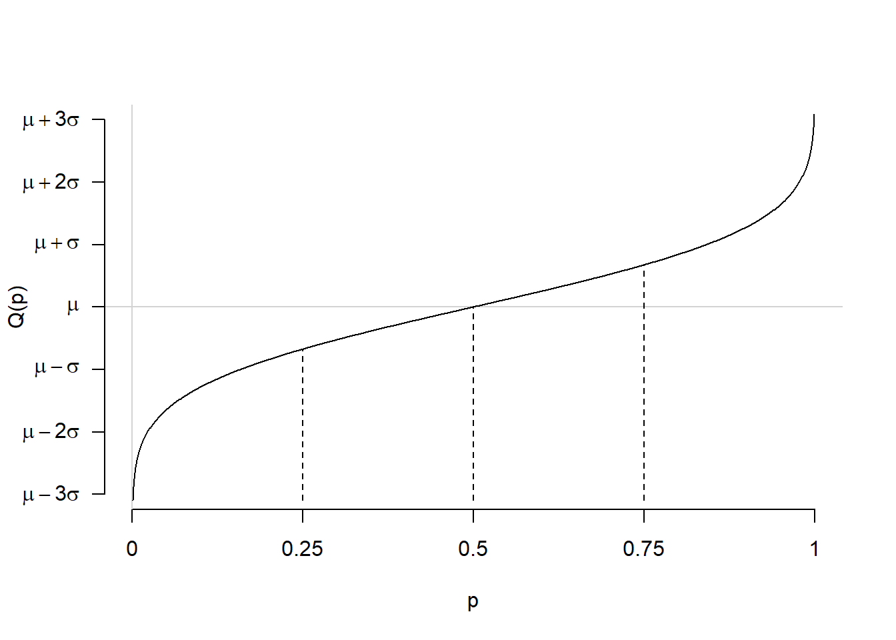
R’da qnorm() fonksiyonunu kullanarak normal kantilleri hesaplayabiliriz. Örneğin
qnorm(0.5, # p olasılık
mean = 100, # mu
sd = 15 # sigma
)[1] 100Yukarıdak kod ile, ortalaması 100 standart sapması 15 olan bir normal dağılımda, hangi değeri aşmama olasılığı %50’dir sorusunu cevaplamış olduk. Daha önce belirttiğimiz gibi normal dağılım için bu aynı zamanda ortalamaya eşittir.
%25 ve %75 yüzdeliklerini (birinci ve üçüncü kartiller) bulalım:
qnorm(0.25, 100, 15)[1] 89.88265qnorm(0.75, 100, 15)[1] 110.1173Örnek 1.3 \(X\sim~N(100,~15^2)\) dağılımına uyan IQ skorlarının 0.1, 0.25, 0.5, 0.75, ve 0.9 olasılıklarına karşılık gelen kantillerini bulunuz.
Çözüm
R qnorm() fonksiyonunu kullanarak
olasiliklar <- c(0.1, 0.25, 0.5, 0.75, 0.9)
qnorm(olasiliklar, mean = 100, sd = 15)[1] 80.77673 89.88265 100.00000 110.11735 119.22327Böylece bireylerin %10’unun 80.78’den, %25’inin 89.88’den, %50’sinin 100’den, %75’inin 110.12’den ve %90’ının 119.22’den küçük IQ skoruna sahip olduğunu söyleyebiliriz.
1.4 Normal Dağılımın Özellikleri
1) Simetriklik
Daha önce belirttiğimiz gibi normal dağılım simetriktir. Simetri katsayısı sıfıra eşittir:
\[
\E((X-\mu)^3)/\sigma^3 = 0
\] Simetri özelliğinin sonucu olarak normal dağılımın ortalaması ve medyanı eşittir. Medyanın tanımını hatırlarsak \[
\int_{-\infty}^m f(x)~dx=0.5
\] eşitliğini sağlayan \(m\) medyanı verir. Normal dağılım için bu beklentiye eşittir: \[
\E(X) \equiv \mu = m
\]
Bunu önceki kısımda kantil fonksiyonundan hareketle de bulmuştuk.
2) Basıklık (kurtosis)
Normal dağılımın basıklık (kurtosis) katsayısı, dağılımın tepe noktasının ne kadar keskin veya basık olduğunu gösterir. Normal dağılım için bu katsayı genellikle 3 olarak ifade edilir ve şu şekilde hesaplanır: \[ \E((X-\mu)^4)/\sigma^4 = 3 \] Burada \(\E((X-\mu)^4)\), \(X\) rassal değişkeninin dördüncü merkezi momentidir. Basıklık katsayısı 3 olan bir dağılım normal basıklık (mesokurtic) olarak adlandırılır. Basıklık katsayısı 3’ten büyük olan dağılımlar daha sivri ve kalın kuyruklu (leptokurtic), 3’ten küçük olanlar ise daha basık (platykurtic) olarak değerlendirilir.
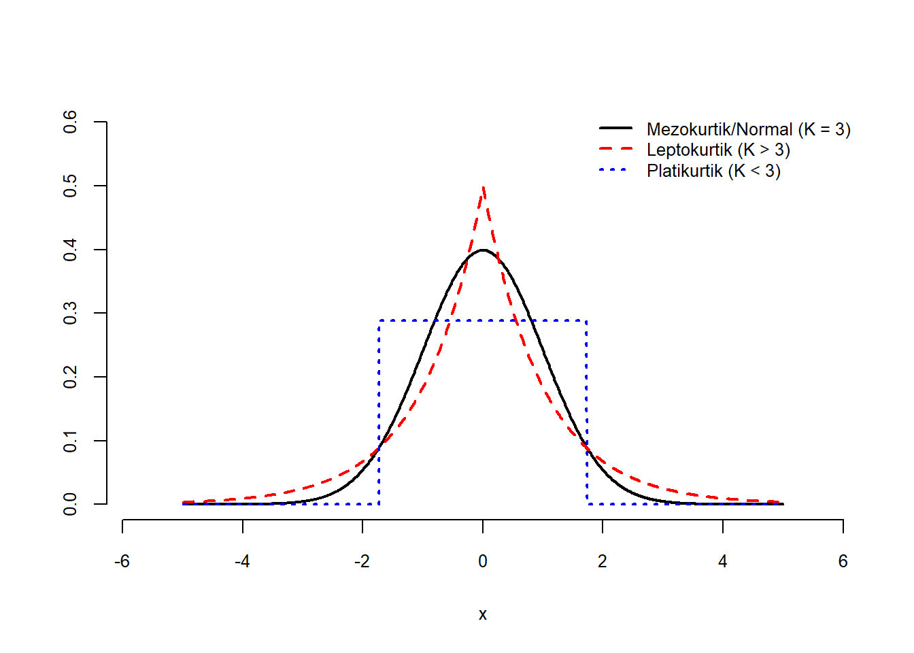
Şekil 1.9 farklı basıklık katsayıların sahip dağılımların tipik şekillerini göstermektedir. Eğer bir dağılım platikurtik veya leptokurtik ise, bu onun kesin olarak normal olduğunu göstermez. “Platikurtik” ve “leptokurtik” terimleri, dağılımın kuyruklarının ve tepe noktasının, normal dağılımla kıyaslandığında nasıl bir şekle sahip olduğunu ifade eder. Normal dağılım mezokurtik bir şekle sahiptir (çarpıklık 0, basıklık 3). Platikurtik dağılımlar, normal dağılıma göre daha basık bir tepeye ve daha ince kuyruklara sahiptir. Bu dağılımlar simetrik olsalar da, düşük basıklık katsayısı onların normal olmadığını gösterir. Leptokurtik dağılımlar, normal dağılıma göre daha sivri bir tepeye ve daha kalın kuyruklara sahiptir.
Bir dağılım, normal dağılıma benzer bir şekle sahip olabilir, ancak farklı çarpıklık ve basıklık katsayılarına sahipse normal dağılım değildir. Normal dağılımdan sapmaların değerlendirilmesine ve normallik sınamalarında çarpıklık ve basıklık değerlerinden sapmalar kullanılmaktadır.
3) Doğrusal dönüştürmeler
Normal dağılımın en önemli özelliklerinden biri doğrusal kombinasyonlarının da normal dağılıma uymasıdır. Eğer \(X\sim~N(\mu,~\sigma^2)\) ise, \(a\) ve \(b\) sabit sayılar olmak üzere
\[ Y=a+bX \] olarak tanımlı yeni bir rassal değişkenin dağılımı da normal olur.
Beklenti operatörünün özelliklerinden hareketle \(Y\)’nin beklenen değeri \[ \E(Y) = a+b\E(X) =a+b\mu \tag{1.5}\] ve varyansı \[ \Var(Y) = b^2\Var(X) = b^2\sigma^2 \tag{1.6}\] olur.
Doğrusal dönüştürme \(Y\)’nin dağılımını kısaca \[ Y\sim~N(a+b\mu,~b^2\sigma^2) \] biçiminde yazabiliriz. Yani, \(Y\) rassal değişkeni ortalaması \(a+b\mu\) ve varyansı \(b^2\sigma^2\) olan bir normal dağılıma uyar.
1.5 Standart Normal Dağılım
\(X\) ortalaması \(\mu\) ve varyansı \(\sigma^2\) olan bir normal dağılıma uysun: \(X\sim~N(\mu,~\sigma^2\). \(a\) ve \(b\) sabitlerini aşağıdaki gibi belirleyerek \[ a=-\frac{\mu}{\sigma},~~~ b=\frac{1}{\sigma} \tag{1.7}\] yeni bir rassal değişken tanımlayalım: \[ Z = a+bX = -\frac{\mu}{\sigma}+\frac{1}{\sigma}X=\frac{X-\mu}{\sigma} \tag{1.8}\]
Z-skoru olarak da bilinen \(Z\) rassal değişkeni bir \(X\)’in ortalamaya uzaklığının kaç standart sapma içerdiğini göstermektedir. Örneğin \(Z=1\) değeri \(X\)’in ortalamadan 1 standart sapma daha fazla olduğunu gösterir. Benzer şekilde \(Z=-2\) ise ilgili değerin ortalamanın 2 standart sapma altında olduğu anlamına gelir.
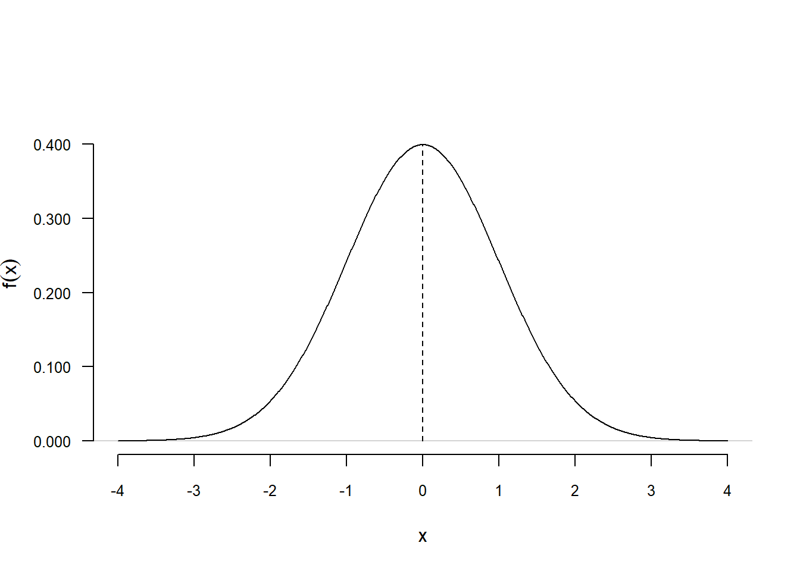
Normal rassal değişkenlerin doğrusal dönüştürmelerinin de normal dağılıma uyduğunu belirtmiştik. \(Z\) dönüştürmesi, \((X-\mu)/\sigma\), doğrusal bir dönüştürme olduğu için normal dağılıma sahiptir. Bunu kısaca \[ Z\sim~N(0,~1) \] biçiminde gösterebiliriz. Gerçekten de \(Z\)’nin beklenen değerinin \(\E(Z)=0\) ve varyansının \(\Var(Z)=1\) olduğu kolayca gösterilebilir. \[ \E(Z)=\E\left( \frac{X-\mu}{\sigma} \right)=\frac{1}{\sigma}\E\left( X-\mu \right) \] Burada \(1/\sigma\) sabit bir sayı olduğu ve rassallık içermediği için beklentinin dışına aldık. Benzer şekilde \(\mu\) da bir sabit olduğundan \[ \E\left( X-\mu \right) = \E(X)-\mu=\mu- \mu=0 \] olur. Öyleyse standard normal beklenen değer \(\E(Z)=\mu_z=0\) olur.
Standart normal dağılımın varyansını türetmek için varyans tanımından hareketle \[ \Var(Z)=\E[ (Z-\E(Z))^2 ]=\E(Z^2) \] olur. Buradan \[ \E(Z^2)=\E\left[ \left( \frac{X-\mu}{\sigma} \right)^2 \right] = \frac{1}{\sigma^2}\E\left[ \left( X-\mu \right)^2 \right] \] \(X\sim~N(\mu,~\sigma^2)\) olduğuna göre \(\E\left[ \left( X-\mu \right)^2 \right]=\sigma^2\) gerçeğinden hareketle \[ \Var(Z) = \E(Z^2)=\frac{1}{\sigma^2}\sigma^2 = 1 \] bulunur.
\(Z\sim~N(0,~1)\) standart normal rassal değişkeninden hareketle \(X\sim~N(\mu,~\sigma^2)\) de tanımlanabilir: \[ Z=\frac{X-\mu}{\sigma}~~ \Leftrightarrow~~ X=\sigma Z +\mu \]
Standart normal dağılımın olasılık yoğunluk fonksiyonunu, Denklem 1.1’de \(\mu=0\) ve \(\sigma^2=1\) yazarak bulabiliriz:
\[
\phi(z)=\frac{1}{\sqrt{2\pi}}\exp\left(-\frac{1}{2}z^2\right),\quad
-\infty <z<\infty
\tag{1.9}\]
Şekil 1.10 standart normal olasılık yoğunluk fonksiyonunun grafiğini göstermektedir.
Standart normal birikimli dağılım fonksiyonu ise \[ \Phi(z)=P(Z\leq z)=\int_{-\infty}^z \frac{1}{\sqrt{2\pi}}\exp\left(-\frac{1}{2}t^2\right)dt \tag{1.10}\] olarak tanımlıdır (Şekil 1.11 (a)). Bu integrallerin kapalı bir çözümü yoktur.
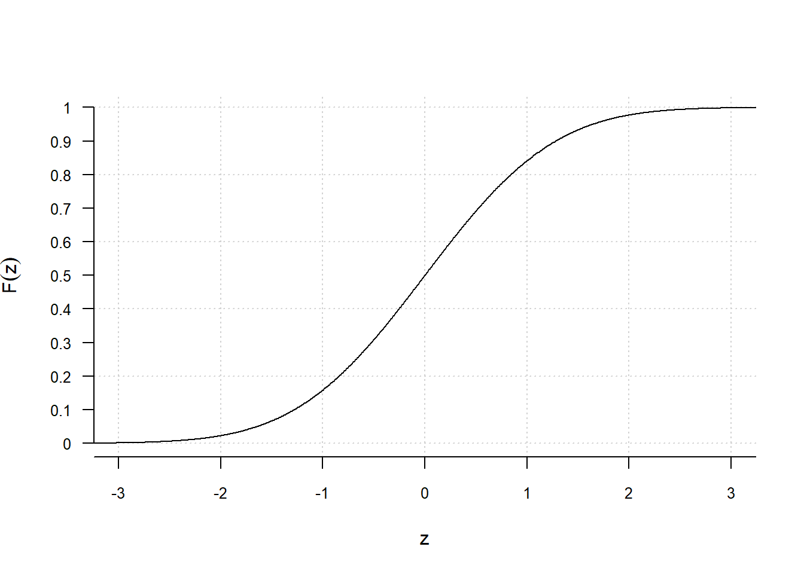
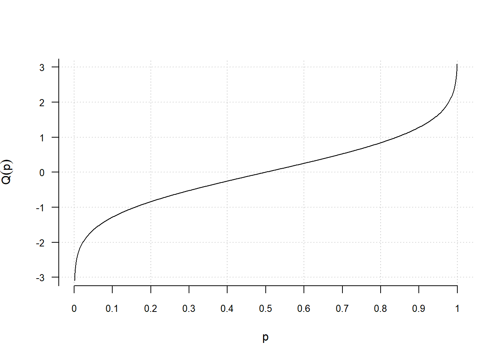
Standart normal dağılımın olasılık yoğunluk ve birikimli dağılım fonksiyonlarını hesaplamak için, daha önce gördüğümüz gibi, dnorm() ve pnorm() fonksiyonlarını kullanabiliriz. İlgilendiğimiz olasılıkların hesaplamanın başka bir yolu standart normal tablosunu kullanmaktır. Bunu izleyen alt bölümde ele alacağız.
Örnek olarak \(X\sim~N(100,~15^2)\) dağılımı için 1 standart sapma içinde olma olasılığını düşünelim. Bunu daha önce bulmuştuk:
p1 <- pnorm(85, mean = 100, sd = 15)
p2 <- pnorm(115, mean = 100, sd = 15)
p2 - p1[1] 0.6826895Aynı olasılığı standart normal dağılımdan hareketle bulmak için \(Z\) dönüştürmesi yapmamız gerekir \(X=85\) için \(Z=(85-100)/15=-1\), \(X=115\) için \(Z=(115-100)/15=1\) bulunur. Öyleyse
pz1 <- pnorm(-1, mean = 0, sd = 1)
pz2 <- pnorm(1, mean = 0, sd = 1)
pz2 - pz1[1] 0.6826895olur. Benzer şekilde 2 standart sapma içinde olma olasılığı
pnorm(2) - pnorm(-2) [1] 0.9544997ve 3 standart sapma içinde olma olasılığı
pnorm(3) - pnorm(-3) [1] 0.9973002olarak bulunur. Bu değerlerin daha önce gördüğümüz ampirik kural ile uyumlu olduğuna dikkat ediniz.
Standart normal dağılımın kantil fonksiyonu da birikimli dağılımın tersi olarak tanımlanır: \[ Q(p) = \Phi^{-1} (z) \] Şekil 1.11 (b) kantil fonksiyonunu göstermektedir. Kantil fonksiyonu, daha önce tanımladığımız gibi, \(p=\P(Z\le z)\) verilmişken buna karşılık gelen \(z\)’yi verir. Örneğin \(p=0.95\) ise standart normal dağılımda buna karşılık gelen \(z\)
qnorm(0.95, mean = 0, sd = 1)[1] 1.644854olur. Yani \[ Q(0.95) = \Phi^{-1} (z) = 1.645 \] yazabiliriz. Standart normal dağılıma uyan bir rassal değişken %95 olasılıkla 1.645’den küçük değerler alır. Buradan hareketle kuyruk olasılığını, yani bu değerden daha büyük sayı çekme olasılığını \[ \P(Z>1.645) = 1-P(Z\leq 1.645) = 1-\Phi(1.645)=1-0.95=0.05 \] %5 olarak buluruz. Standart normal dağılım simetrik olduğu için \[ \P(Z\leq -1.645) = 0.05 \] bulunur. Kantil fonksiyonu standart normal dağılımda belirli olasılıklara karşılık gelen kritik değerlerin bulunmasında kullanışlıdır. Benzer şekilde \(p=0.90\) ise standart normal dağılımda buna karşılık gelen \(z\)
qnorm(0.9) # default: mean = 0, sd = 1[1] 1.281552olarak bulunur. Hangi değeri aşmama olasılığı yüzde 10’dur sorusunu cevaplayalım:
qnorm(0.1) [1] -1.281552Buradan hareketle \[ \P(Z\leq -1.28) = 0.1,~~~~\P(Z> 1.28) = 0.1 \] yazılabilir.
1.6 Z Tabloları ile Normal Dağılım Olasılıklarının Hesaplanması
\(X\sim N(\mu,\sigma^2)\) olsun. Aşağıdaki olasılığı hesaplamak istiyoruz: \[ \P(a<X<b)=\int_a^b \frac{1}{\sigma\sqrt{2\pi}}\exp\left(-\frac{1}{2\sigma^2}(x-\mu)^2\right)dx \tag{1.11}\]
Bu integralin kapalı bir çözümünün olmadığını, ancak nümerik yöntemlerle bilgisayarda istenen kesinlik düzeyinde hesaplanabildiğini öğrenmiştik. Bunun için her seferinde bilgisayarda hesap yapmak yerine veya bilgisayarın olmadığı durumlarda standart normal dağılım (Z) tablolarını kullanabiliriz.
İstenen olasılığı aşağıdaki gibi yazalım: \[ \P\left(\frac{a-\mu}{\sigma}<\frac{X-\mu}{\sigma}<\frac{b-\mu}{\sigma}\right)= \P\left(\frac{a-\mu}{\sigma}<Z<\frac{b-\mu}{\sigma}\right) \tag{1.12}\]
\[ P\left(\frac{a-\mu}{\sigma}<Z<\frac{b-\mu}{\sigma}\right) = \Phi\left(\frac{b-\mu}{\sigma}\right)-\Phi\left(\frac{a-\mu}{\sigma}\right) \tag{1.13}\]
Burada \(\Phi(z)=P(Z\leq z)\equiv F(z)\) standart normal birikimli dağılım fonksiyonunun \(z\)’deki değeridir (\(z\)’den küçük olma olasılığı).
Z tablosu, Tablo 1.1, işte bu birikimli dağılımın yaklaşık değerlerini verir. Bu tabloda sadece pozitif \(z\) için dağılım fonksiyonu değerleri gösterilmiştir. Simetri özelliğinden hareketle negatif değerler için olasılıklar kolayca bulunabilir.
Tablo 1.1’de satırlar noktadan önce ve sonraki basamakları, sütunlar ise noktadan sonraki ikinci basamağı göstermektedir. Örneğin \(Z\)’nin 1.25 değerini aşmama olasılığını bulmak istersek 1.2 satırına ve 0.05 sütununa karşılık gelen hücredeki değeri almamız gerekir. Böylece \(P(Z\leq 1.25)=0.8944\) bulunur.
Negatif değerler için \(\Phi(z)=P(Z\leq z)\)’nin simetri özelliği kullanılabilir: \[
\begin{array}{lll}
\Phi(-z) &=& \P(Z\leq -z) \\
&=& \P(Z\geq z)\\
&=& 1-\P(Z\leq z)\\
&=& 1-\Phi(z)
\end{array}
\] Örneğin:
\[
\begin{array}{lll}
P(Z\leq -1.25)&=& \Phi(-1.25) \\
&=&1-\Phi(1.25)\\
&=&1-0.8944=0.1056
\end{array}
\]
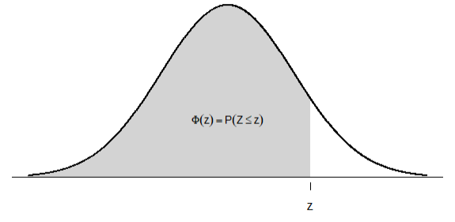
| 0 | 0.01 | 0.02 | 0.03 | 0.04 | 0.05 | 0.06 | 0.07 | 0.08 | 0.09 | |
|---|---|---|---|---|---|---|---|---|---|---|
| 0 | 0.5000 | 0.5040 | 0.5080 | 0.5120 | 0.5160 | 0.5199 | 0.5239 | 0.5279 | 0.5319 | 0.5359 |
| 0.1 | 0.5398 | 0.5438 | 0.5478 | 0.5517 | 0.5557 | 0.5596 | 0.5636 | 0.5675 | 0.5714 | 0.5753 |
| 0.2 | 0.5793 | 0.5832 | 0.5871 | 0.5910 | 0.5948 | 0.5987 | 0.6026 | 0.6064 | 0.6103 | 0.6141 |
| 0.3 | 0.6179 | 0.6217 | 0.6255 | 0.6293 | 0.6331 | 0.6368 | 0.6406 | 0.6443 | 0.6480 | 0.6517 |
| 0.4 | 0.6554 | 0.6591 | 0.6628 | 0.6664 | 0.6700 | 0.6736 | 0.6772 | 0.6808 | 0.6844 | 0.6879 |
| 0.5 | 0.6915 | 0.6950 | 0.6985 | 0.7019 | 0.7054 | 0.7088 | 0.7123 | 0.7157 | 0.7190 | 0.7224 |
| 0.6 | 0.7257 | 0.7291 | 0.7324 | 0.7357 | 0.7389 | 0.7422 | 0.7454 | 0.7486 | 0.7517 | 0.7549 |
| 0.7 | 0.7580 | 0.7611 | 0.7642 | 0.7673 | 0.7704 | 0.7734 | 0.7764 | 0.7794 | 0.7823 | 0.7852 |
| 0.8 | 0.7881 | 0.7910 | 0.7939 | 0.7967 | 0.7995 | 0.8023 | 0.8051 | 0.8078 | 0.8106 | 0.8133 |
| 0.9 | 0.8159 | 0.8186 | 0.8212 | 0.8238 | 0.8264 | 0.8289 | 0.8315 | 0.8340 | 0.8365 | 0.8389 |
| 1 | 0.8413 | 0.8438 | 0.8461 | 0.8485 | 0.8508 | 0.8531 | 0.8554 | 0.8577 | 0.8599 | 0.8621 |
| 1.1 | 0.8643 | 0.8665 | 0.8686 | 0.8708 | 0.8729 | 0.8749 | 0.8770 | 0.8790 | 0.8810 | 0.8830 |
| 1.2 | 0.8849 | 0.8869 | 0.8888 | 0.8907 | 0.8925 | 0.8944 | 0.8962 | 0.8980 | 0.8997 | 0.9015 |
| 1.3 | 0.9032 | 0.9049 | 0.9066 | 0.9082 | 0.9099 | 0.9115 | 0.9131 | 0.9147 | 0.9162 | 0.9177 |
| 1.4 | 0.9192 | 0.9207 | 0.9222 | 0.9236 | 0.9251 | 0.9265 | 0.9279 | 0.9292 | 0.9306 | 0.9319 |
| 1.5 | 0.9332 | 0.9345 | 0.9357 | 0.9370 | 0.9382 | 0.9394 | 0.9406 | 0.9418 | 0.9429 | 0.9441 |
| 1.6 | 0.9452 | 0.9463 | 0.9474 | 0.9484 | 0.9495 | 0.9505 | 0.9515 | 0.9525 | 0.9535 | 0.9545 |
| 1.7 | 0.9554 | 0.9564 | 0.9573 | 0.9582 | 0.9591 | 0.9599 | 0.9608 | 0.9616 | 0.9625 | 0.9633 |
| 1.8 | 0.9641 | 0.9649 | 0.9656 | 0.9664 | 0.9671 | 0.9678 | 0.9686 | 0.9693 | 0.9699 | 0.9706 |
| 1.9 | 0.9713 | 0.9719 | 0.9726 | 0.9732 | 0.9738 | 0.9744 | 0.9750 | 0.9756 | 0.9761 | 0.9767 |
| 2 | 0.9772 | 0.9778 | 0.9783 | 0.9788 | 0.9793 | 0.9798 | 0.9803 | 0.9808 | 0.9812 | 0.9817 |
| 2.1 | 0.9821 | 0.9826 | 0.9830 | 0.9834 | 0.9838 | 0.9842 | 0.9846 | 0.9850 | 0.9854 | 0.9857 |
| 2.2 | 0.9861 | 0.9864 | 0.9868 | 0.9871 | 0.9875 | 0.9878 | 0.9881 | 0.9884 | 0.9887 | 0.9890 |
| 2.3 | 0.9893 | 0.9896 | 0.9898 | 0.9901 | 0.9904 | 0.9906 | 0.9909 | 0.9911 | 0.9913 | 0.9916 |
| 2.4 | 0.9918 | 0.9920 | 0.9922 | 0.9925 | 0.9927 | 0.9929 | 0.9931 | 0.9932 | 0.9934 | 0.9936 |
| 2.5 | 0.9938 | 0.9940 | 0.9941 | 0.9943 | 0.9945 | 0.9946 | 0.9948 | 0.9949 | 0.9951 | 0.9952 |
| 2.6 | 0.9953 | 0.9955 | 0.9956 | 0.9957 | 0.9959 | 0.9960 | 0.9961 | 0.9962 | 0.9963 | 0.9964 |
| 2.7 | 0.9965 | 0.9966 | 0.9967 | 0.9968 | 0.9969 | 0.9970 | 0.9971 | 0.9972 | 0.9973 | 0.9974 |
| 2.8 | 0.9974 | 0.9975 | 0.9976 | 0.9977 | 0.9977 | 0.9978 | 0.9979 | 0.9979 | 0.9980 | 0.9981 |
| 2.9 | 0.9981 | 0.9982 | 0.9982 | 0.9983 | 0.9984 | 0.9984 | 0.9985 | 0.9985 | 0.9986 | 0.9986 |
| 3 | 0.9987 | 0.9987 | 0.9987 | 0.9988 | 0.9988 | 0.9989 | 0.9989 | 0.9989 | 0.9990 | 0.9990 |
Örnek 1.4 IQ puanı örneğine devam edelim. \(X\sim~N(100,~15^2)\) olsun. Rassal çekilen bir bireyin puanının 70 ile 115 arasında olma olasılığını Z tablosu ile bulun.
Çözüm
Standardize ederek istenen olasılığı \[ \P(70< X <115) = \P\left(\frac{70-100}{15}<\frac{X-\mu}{\sigma}<\frac{115-100}{15}\right)= \P\left(-2 < Z < 1 \right) \] biçiminde yazabiliriz. Standart normal birikimli dağılımı kullanarak \[ \P\left(-2 < Z < 1 \right) = \Phi(1) - \Phi(-2) \] yazabiliriz. Z tablosuna baktığımızda \[ \Phi(1) = 0.8413 \] ve \[ \Phi(2) = 0.9772 \] olduğunu görüyoruz. Simetri gereği \[ \Phi(-2) = 1-\Phi(2) = 1-0.9772=0.0228 \] olduğundan istenen olasılık \[ \P\left(-2 < Z < 1 \right) = \Phi(1) - \Phi(-2) = 0.8413-0.0228=0.8185 \] olur. Şekil 1.12 bu aralık olasılığın hem orijinal normal dağılım hem de standart normal dağılım üzerinde göstermektedir.
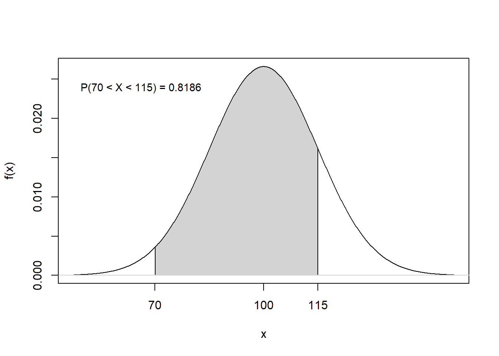
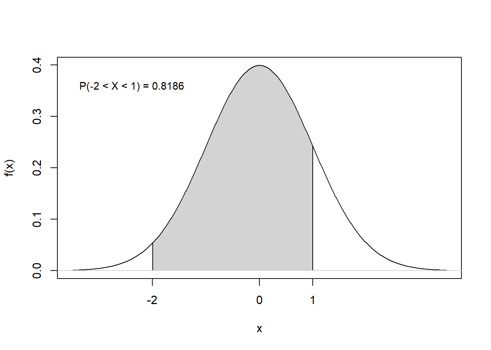
1.7 Çözümlü Alıştırmalar
Alıştırma 1.1 Standart normal dağılım tablosunu kullanarak aşağıdaki olasılıkları hesaplayınız ve yoğunluk fonksiyonu üzerinde gösteriniz:
- \(\P(Z<-0.86)\)
- \(\P(Z>1.24)\)
- \(\P(-0.86<Z<1.24)\)
- \(\P(|Z|>1)\)
Çözüm:
a) \(\Phi(z)\equiv F_Z(z)=\P(Z\leq z)\) standart normal birikimli dağılım fonksiyonu olmak üzere istenen olasılık:
\[ \begin{array}{lll} \P(Z<-0.86) &=& \Phi(-0.86) \\ &=& 1-\Phi(0.86) \\ &=& 1-0.8051\\ &=& 0.1949 \end{array} \] olarak bulunur (bkz. Şekil 1.13 (a))
b) (bkz. Şekil 1.13 (b))
\[ \begin{array}{lll} \P(Z>1.24) &=& 1-\P(Z\leq 1.24) \\ &=& 1-\Phi(1.24) \\ &=& 1-0.8925 \\ &=& 0.1075 \end{array} \]
c) (bkz. Şekil 1.13 (c))
\[ \begin{array}{lll} \P(-0.86<Z<1.24) &=& F_Z(1.24)-F_Z(-0.86) \\ &=& F_Z(1.24)-[1-F_Z(0.86)] \\ &=& 0.8925-(1-0.8051) \\ &=& 0.6976 \end{array} \]
d) (bkz. Şekil 1.13 (d))
\[ \begin{array}{lll} \P(|Z|>1) &=& \P(Z<-1)+\P(Z>1) \\ &=& [1-F_Z(1)]+[1-F_Z(1)] \\ &=& 2\times (1-0.8413) \\ &=& 0.3174 \end{array} \]
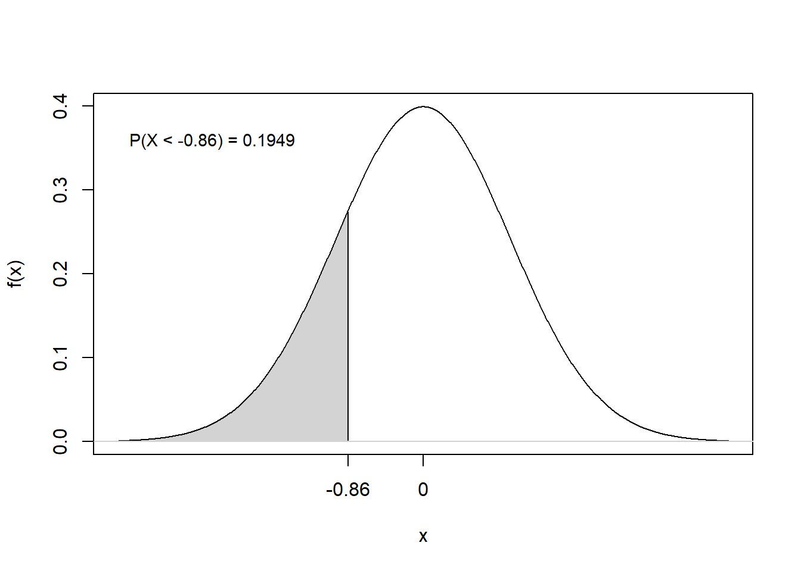
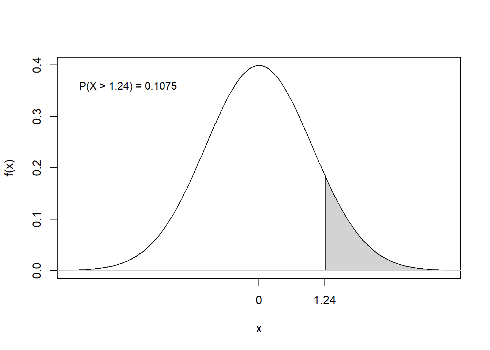
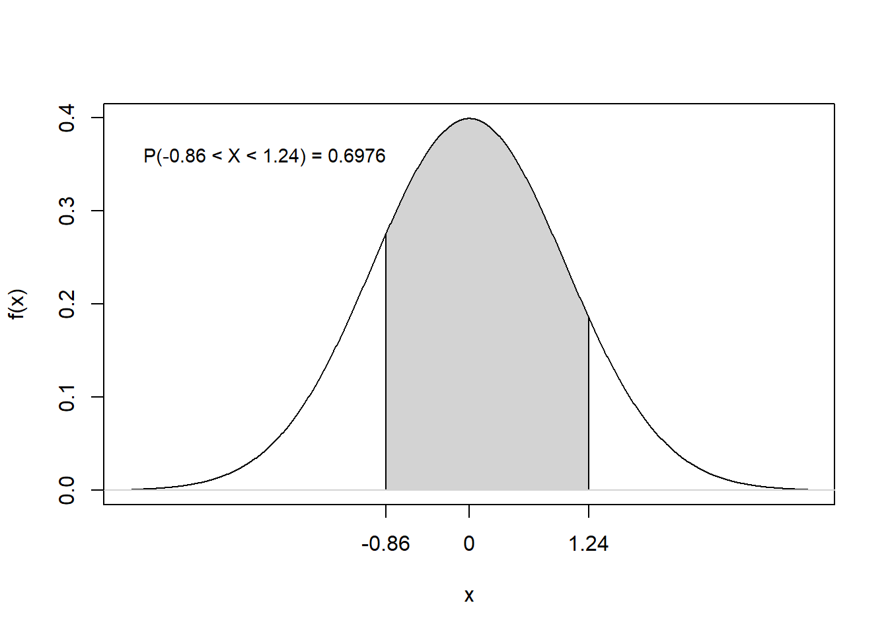
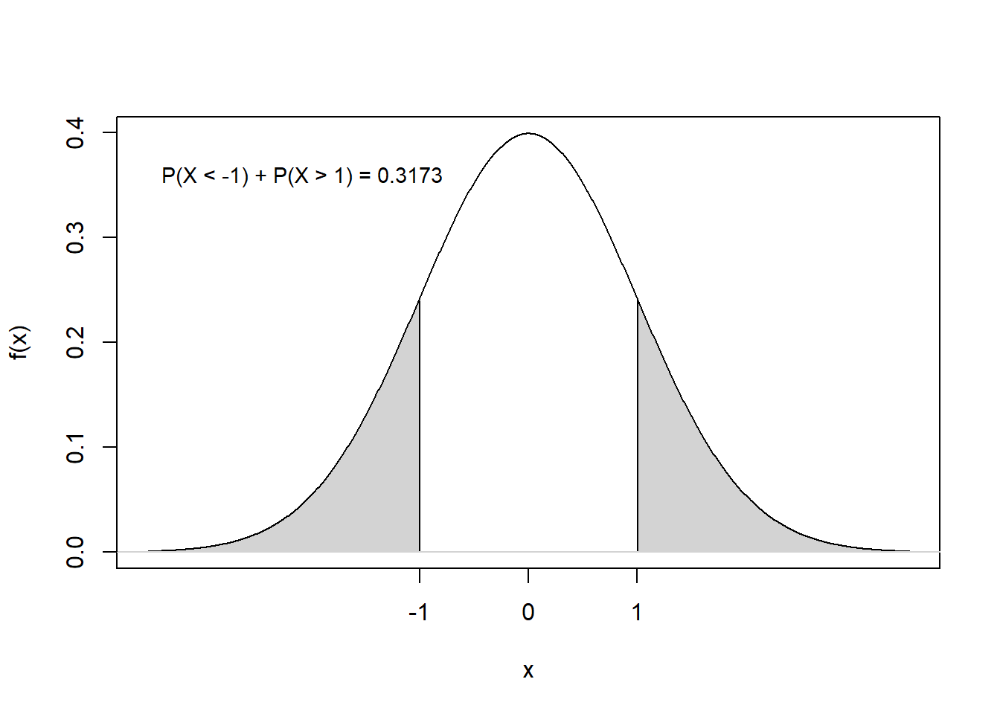
Alıştırma 1.2 \(Z\) standart normal dağılıma uyan bir rassal değişken olsun: \(Z\sim~N(0,~1)\). Aşağıda verilen eşitlikleri sağlayan \(k\) değerlerini bulunuz:
- \(\P(Z\leq k)=0.85\)
- \(\P(Z>k)=0.25\)
- \(\P(|Z|<k)=0.90\)
- \(\P(-1<Z<k) = 0.60\)
Çözüm:
a) \(\P(Z\leq k)=0.85\) eşitliğini sağlayan \(k\) değerini Z tablosunu kullanarak ya da R ile bulabiliriz (bkz. Şekil 1.14). Tablodan bu hedef olasılık 0.85’e en yakın iki değer olduğunu, yani \(k\) sayısının \(1.03\) ile \(1.04\) arasında olduğunu görebiliriz: \[
\P(Z\leq 1.03)=0.8485
\] \[
\P(Z\leq 1.04)=0.8508
\] Basit bir yaklaşım bu iki sayının ortalamasına dayanır. Böylece \(k=(1.03+1.04)/2=1.035\) diyebiliriz. Başka bir alternatif doğrusal interpolasyon yapmaktır.
Olasılık \(0.85\) bu iki değerin arasında olduğuna göre istenen \(k\) değerini aşağıdaki gibi bulabiliriz: \[
k=1.03 + \frac{(0.85-0.8485)}{(0.8513-0.8485)}\cdot(1.04-1.03)
\] Burada basit bir interpolasyon yapıyoruz. Üst sınır ile alt sınır arasındaki farkın belirli bir oranını alt sınıra ekliyoruz. Önce hedef olasılık (0.85) ile alt sınırı aşmama olasılığı arasındaki farkı hesaplıyoruz: \[
0.85-0.8485 = 0.0015
\] Daha sonra iki olasılık arasındaki farkı (payda) hesaplıyoruz: \[
0.8513-0.8485=0.0028
\] Bu iki değerin oranı hedef olasılığın aralıktaki yerini yaklaşık olarak gösterir: \[
\frac{0.0015}{0.0028}\approx 0.5357
\] Son olarak alt sınır değerini güncelliyoruz: \[
k = 1.03+\frac{0.0015}{0.0028}\cdot (0.01)\approx 1.0354
\] R pnorm() fonksiyonu ile bu değerden daha küçük bir sayı çekme olasılığının
pnorm(1.0354)[1] 0.8498yaklaşık olarak 0.85 olduğunu görebiliriz.
Normal dağılım kantil fonksiyonu ile doğrudan da bulabiliriz:
k <- qnorm(0.85)
k[1] 1.036Gerçekten de \(Z\)’nin \(1.036433\) değerinden daha küçük olma olasılığı tam olarak 0.85’tir:
pnorm(k)[1] 0.85
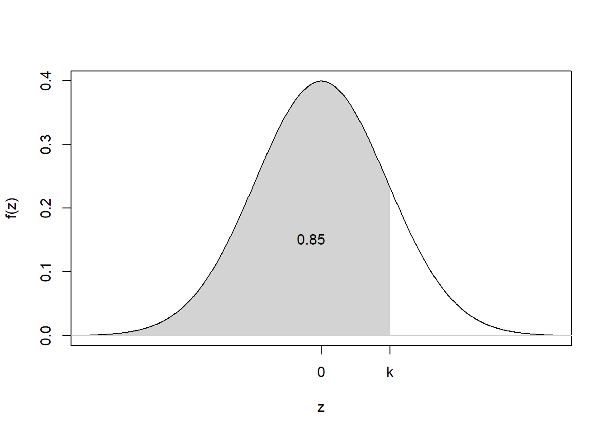
b) \(\P(Z>k)=0.25\) olan \(k\) değerini bulalım. \(Z\) tablosu her zaman belirli bir değeri aşmama olasılıklarını verdiğine göre \[ \P(Z>k)=1-\P(Z\leq k)=1-\Phi(k)=0.25 \] ve \[ \P(Z\leq k)=\Phi(k)=0.75 \] olmasını sağlayan \(k\) değerini bulacağız (bkz. Şekil 1.15).
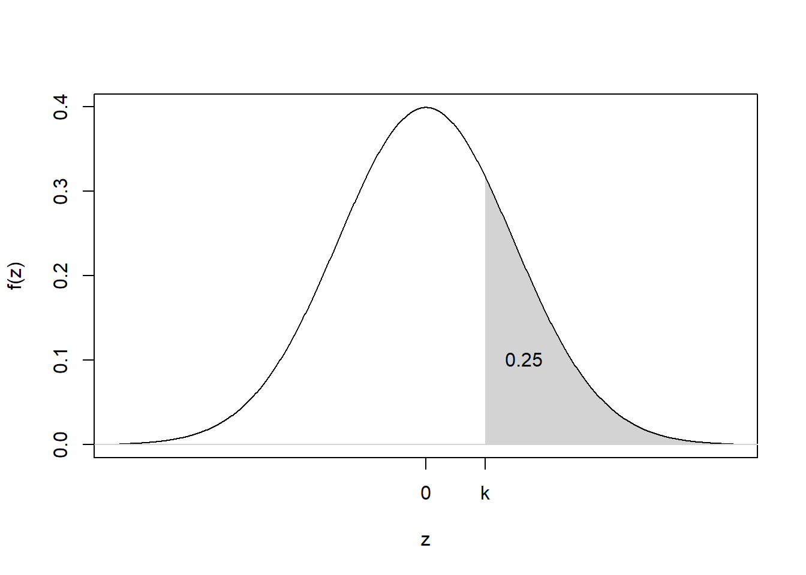
\(Z\) tablosundan 0.75 olasılığının 0.7486 ile 0.7517 arasında olduğunu görüyoruz. Bunlara karşılık gelen değerler 0.67 ile 0.68’dir. Öyleyse yaklaşık olarak \(k=0.675\) diyebiliriz.
c) \(\P(|Z|<k)=0.90\) eşitliğini sağlayan \(k\)’yi bulmamız isteniyor (bkz. Şekil 1.16). Bu aralık aşağıdaki gibi yazılabilir: \[ \P(-k<Z<k)=\Phi(k)-\Phi(-k)=0.90 \] Simetri gereği \[ \Phi(k)-[1-\Phi(k)]=0.90 \] ve böylece \[ 2\Phi(k) = 0.1 \] \[ \Phi(k) = \P(Z<k)= 0.05 \] yazabiliriz. Yani \(Z\)’nin hangi sayıdan küçük olma olasılığının \(0.05\) olduğunu bulacağız. Z tablosu standart normal dağılımın pozitif değerlerini gösteriyordu. Simetri özelliğinden hareketle negatif değerleri bulabiliyoruz. Yani \(\P(Z<-k)= 0.05\) eşitliğin sağlayan negatif değer aşağıdaki eşitliği sağlayan pozitif değer ile aynıdır: \[ 1-\P(Z<k)=1-0.95 = 0.05=\P(Z>k) \] Tablodan 0.95’in 0.9495 ile 0.9505 arasında olduğunu görüyoruz. Öyleyse bunu sağlayan değer 1.64 ile 1.65 arasındadır. Ortalamasını alırsak \[ \P(Z<1.645) = 0.95 \] yazabiliriz. Bu aynı zamanda simetri özelliğinden dolayı \[ \P(Z<-1.645) = 1-0.95=0.05 \] olduğu anlamına gelir. Sonuç olarak
\[ \begin{array}{lll} \P(|Z|<1.645) &=& \P(-1.645<Z<1.645) \\ &=& \Phi(1.645)-\Phi(-1.645) \\ &=& \Phi(1.645)-[1-\Phi(1.645)] \\ &=& 0.95 - (1-0.95) \\ &=& 0.90 \end{array} \] bulunur.
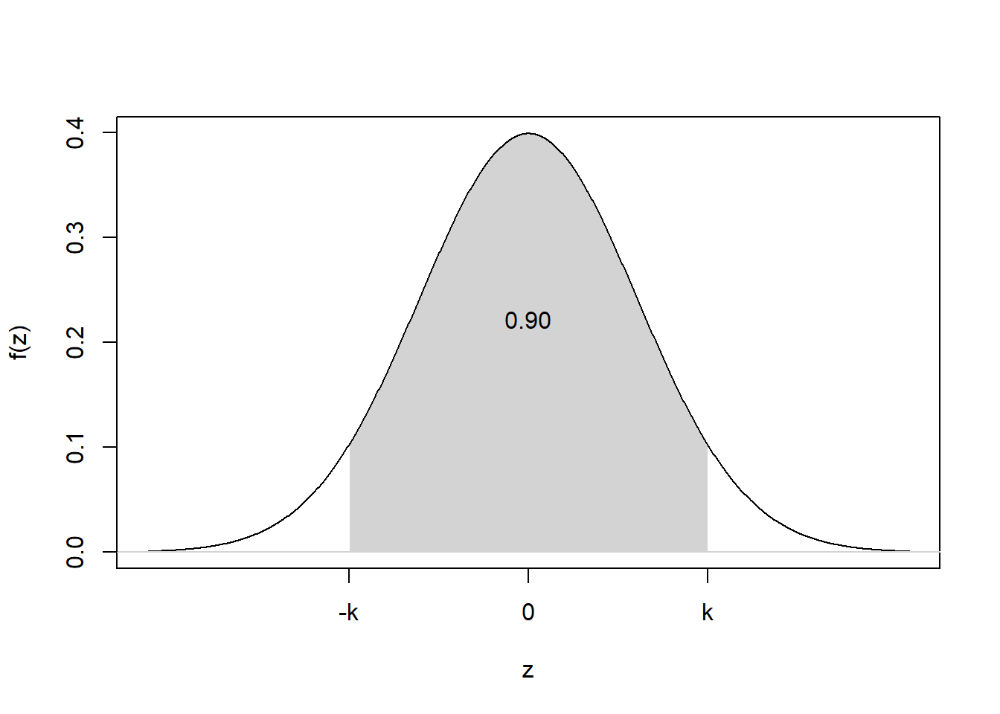
R ile \(k\)’yi bulmak için qnorm() fonksiyonunu kullanabiliriz:
qnorm(0.95)[1] 1.645qnorm(0.95) komutu standart normal dağılımın %95 yüzdeliğini verir: hangi sayıdan daha küçük olma olasılığı %95’dir ya da hangi sayıdan büyük olma olasılığı %5’tir?
d) \(\P(-1<Z<k) = 0.60\) eşitliğindeki \(k\) değerini bulalım (bkz. Şekil 1.17). Standart normal dağılımda \(-1\) ile \(k\) arasındaki alanın \(0.6\) olmasını istiyoruz: \[ \P(-1<Z<k) = \Phi(k)-\Phi(-1) = 0.60 \] \(\Phi(-1)=1-\Phi(1)=1-0.8413=0.1587\) olduğuna göre \[ \Phi(k)-0.1587 = 0.60 \] \[ \Phi(k) = 0.7587 \] olan \(k\) sayısını bulacağız. Z tablosundan bunun yaklaşık 0.7 olduğunu görüyoruz: \[ \P(Z<0.70)\approx 0.758 \] Sonuç olarak \[ \P(-1<Z<0.70) = \Phi(0.70)-[1-\Phi(1)] = 0.758-0.158= 0.60 \] bulunur.
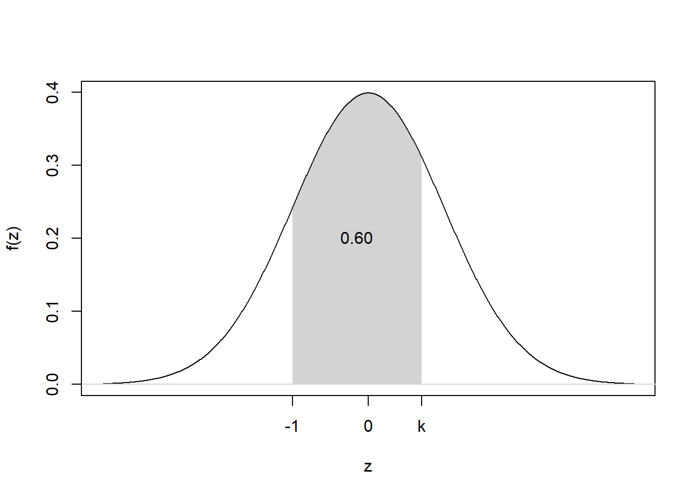
Alıştırma 1.3 \(X\) ortalaması \(\mu=10\) ve standart sapması \(\sigma=3\) olan bir normal dağılıma uymaktadır. Buna göre
- \(X\)’in 13’den büyük olma olasılığı kaçtır?
- \(X\)’in 8’den büyük ve 15’den küçük olma olasılığı kaçtır?
- \(X\)’in hangi sayıdan küçük olma olasılığı \(0.60\)’dır?
Çözüm:
a) \(X\)’in 13’den büyük olma olasılığı kaçtır?
\[ \begin{array}{lll} \P(X>13) &=& \P\left(\frac{X-\mu}{\sigma}> \frac{13-10}{3}\right) \\ &=& \P\left(Z> \frac{13-10}{3}\right) \\ &=& \P(Z>1) =1-\P(Z\leq 1) \\ &=& 1-\Phi(1) = 0.8413 \\ &=& 0.1587 \end{array} \] b) \(X\)’in 8’den büyük ve 15’den küçük olma olasılığı kaçtır? \[ \begin{array}{lll} \P(8<X<15) &=& \P\left( \frac{8-10}{3}<\frac{X-\mu}{\sigma}< \frac{15-10}{3}\right) \\ &=& \P(-0.67<Z<1.67) \\ &=& \Phi(1.67)-\Phi(-0.67) \\ &=& 0.9525-(1-0.7486)\\ &=& 0.7011 \end{array} \]
c) \(X\)’in hangi sayıdan küçük olma olasılığı \(0.60\)’dır?
Bu sayıya \(a\) diyelim: \[ \P(X<a)=\P\left( \frac{X-\mu}{\sigma}< \frac{a-10}{3}\right) =0.60 \] olmasını sağlayan \(a\) değerini bulacağız. \(Z\) tablosunda \(0.255\)’den daha küçük bir sayı çekme olasılığının \(0.60\) olduğunu görüyoruz: \[ \P(Z<0.255)=0.6 \] Buradan \[ \frac{a-10}{3} = 0.255 ~~\Rightarrow~ a=10.765 \] bulunur.
Alıştırma 1.4 Bir dönercide aylık talebin ortalaması 800 kg ve standart sapması 100 kg olan bir normal dağılıma uyduğu bilinmektedir. Buna göre
- Aylık talebin 600 kg’dan fazla olma olasılığı kaçtır?
- Aylık talebin 700 ile 900 arasında olma olasılığı kaçtır?
- Talebin hangi sayıdan büyük olma olasılığı 0.25’dir?
Çözüm:
a) Aylık talebin 600 kg’dan fazla olma olasılığı kaçtır?
\[ \begin{array}{lll} \P(X>600) &=& \P\left(\frac{X-\mu}{\sigma}> \frac{600-800}{100}\right) \\ &=& \P\left(Z> -2\right) \\ &=& 1-\P(Z< -2) = 1-[1-\P(Z<2)] \\ &=& \Phi(2) \\ &=& 0.9772 \end{array} \] Aylık talebin 600 kg’dan fazla olma olasılığı yaklaşık olarak %98’tir.
b) Aylık talebin 700 ile 900 arasında olma olasılığı kaçtır? \[ \begin{array}{lll} \P(700<X<900) &=& \P\left( \frac{700-800}{100}<\frac{X-\mu}{\sigma}< \frac{900-800}{100}\right) \\ &=& \P(-1<Z<1) \\ &=& \Phi(1)-\Phi(-1) \\ &=& 0.8413-(1-0.8413)\\ &=& 0.6826 \end{array} \]
c) Talebin hangi sayıdan büyük olma olasılığı 0.25’dir?
Bu sayıya a diyelim: \[ \P(X>a)=\P\left( \frac{X-\mu}{\sigma}> \frac{a-800}{100}\right) =0.25 \] eşitliğini sağlayan \(a\) sayısını bulmak istiyoruz. \(Z\) tablosundan yaklaşık olarak \[ \P(Z<0.67)=0.75~\Rightarrow~\P(Z>0.67)=1-0.75=0.25 \] olduğu görülebilir. Öyleyse \[ \frac{a-800}{100} = 0.67 ~~\Rightarrow~ a=867 \] bulunur: \[ \P(X>867) = 0.25 \]
Alıştırma 1.5 Çok sayıda öğrencinin kayıtlı olduğu bir İstatistik dersinde öğrencilerin notları ortalaması 62 standart sapması 11 olan bir normal dağılıma uymaktadır.
- Bir öğrencinin notunun 40 ile 84 arasında olma olasılığı kaçtır?
- Öğrencilerin %10’una AA verilecektir. Notu kaçın üzerinde olanlar AA alır?
- Hangi notun altında kalanlar en kötü %10 performansa sahiptir?
a) Bir öğrencinin notunun 50 ile 75 arasında olma olasılığı kaçtır?
\(X\) not olsun. \(\mu=62\) ve \(\sigma=11\) verilmiş. Buna göre istenen olasılık \[ \begin{array}{lll} \P(40<X<84) &=& \P\left( \frac{40-62}{11}<\frac{X-\mu}{\sigma}< \frac{84-62}{11}\right) \\ &=& \P(-2<Z<2) \\ &=& \Phi(2)-\Phi(-2) \\ &=& 0.9772-(1-0.9772)\\ &=& 0.9544 \end{array} \] Öğrencilerin %95.4’ünün notları 40 ile 84, yani iki standart sapma içindedir.
b) Öğrencilerin %10’una AA verilecektir. Notu kaçın üzerinde olanlar AA alır?
En yüksek not alan %10’luk dilime AA verileceğine göre \[ \P(X>a) =\P\left( \frac{X-\mu}{\sigma}> \frac{a-62}{11}\right) = 0.10 \] ya da \[ \P\left( Z <\frac{a-62}{11}\right) = 0.90 \] olmasını sağlayan \(a\) sayısını bulmamız gerekir. Standart normal tablosundan \[ \P(Z<1.285) = 0.90 \] olduğunu biliyoruz. öyleyse \[ \frac{a-62}{11} = 1.285~\Rightarrow~ 76.135 \] bulunur.
c) Hangi notun altında kalanlar en kötü %10 performansa sahiptir?
\[ \P(X<a)=\P\left( Z <\frac{a-62}{11}\right) =0.10 \] olmasını sağlayan \(a\) sayısını bulacağız. \(Z\) tablosundan \[ \P(Z<-1.285) = 0.10 \] olduğunu görebiliriz. Buradan \[ \frac{a-62}{11} = -1.285~\Rightarrow~ 47.865 \] bulunur. Öğrencilerin %10’u yaklaşık 48’den düşük not almıştır.
Benzer şekilde diğer notlar da bulunabilir. \(Z\) tablosundan ilgili olasılığı karşılık gelen \(z\) değerleri bulunur ve \[ x=\mu+z\sigma \] buna karşılık gelen \(x\) değeri bulunur. Alıştırma olarak diğer harf notlarını kendiniz bulabilirsiniz.
Alıştırma 1.6 (Binom dağılımının Normal yakınsaması) Hilesiz bir madeni para 100 kez atılıyor. Tura sayısının \(40\) ile \(60\) arasında olma olasılığı kaçtır?
Burada \(X\), tura sayısı, \(Binom(n=100,p=0.5\) dağılımına uyar. İstenen olasılık \[ \P(40\leq X\leq 60) = \P(X=40)+\P(X=41)+\ldots + \P(X=60) \] \(X\) kesikli olduğu için her bir olasılığı Binom formülüyle bulabiliriz: \[ \P(X=x)= \frac{100!}{x!(100-x)!} 0.5^x\cdot 0.5^{100-x} \] Bu ifadeyi her \(x\) için hesaplamak mümkün olsa da, pratikte bu yaklaşım oldukça zahmetlidir. Başka bir yol binom dağılımının normal yakınsamasını kullanmaktır.
\(X\) \(n\) denemede başarı sayısı ve \(p\) başarı olasılığı olsun. Önceki bölümde \(X\)’in \(Binom(n,p\) dağılımına uyduğunu öğrenmiştik. Binom dağılımının ortalaması ve varyansının \[ \E(X) = np,\quad \Var(X)=np(1-p) \] olduğunu biliyoruz. Eğer \(n\) yeterince büyükse Binom olasılıklarını hesaplamakta Normal dağılımı kullanabiliriz. \(X\)’i standardize edersek \[ Z=\frac{X-\E(X)}{\sqrt{\Var(X)}}=\frac{X-np}{\sqrt{np(1-p)}}\sim~N(0,1) \] bu rassal değişken yaklaşık olarak standart normal dağılıma uyar. Bu yaklaştırımın geçerli olabilmesi için genellikle \[ np(1-p)>5 \] şartının sağlanması gerekir.
Örneğimize geri dönelim. Binom dağılımının ortalaması ve varyansı şu şekilde hesaplanır:
\[
\E(X) = np = 100 \cdot 0.5 = 50, \quad \Var(X) = np(1-p) = 100 \cdot 0.5 \cdot 0.5 = 25
\]
Standart sapma:
\[
\sigma = \sqrt{\Var(X)} = \sqrt{25} = 5
\]
Yaklaşık olarak \(X \sim N(50, 25)\). Ancak, Binom dağılımı kesikli bir dağılım olduğu için, sürekli bir dağılım olan Normal dağılıma geçiş yaparken süreklilik düzeltmesi uygulanmalıdır.
Süreklilik düzeltmesi, bir kesikli dağılımın olasılığını sürekli bir dağılıma uyarlamak için aralığın uç noktalarına \(\pm 0.5\) eklenmesini ifade eder. Bu düzeltmeyle:
\[
\P(40 \leq X \leq 60) \approx \P(39.5 \leq X \leq 60.5)
\]
Bu düzeltme, Binom olasılığını Normal dağılımda daha doğru bir şekilde temsil etmeyi sağlar.
Standardize ederek şu ifadeye ulaşılır:
\[
\P(39.5 \leq X \leq 60.5) = \P\left(\frac{39.5 - 50}{5} \leq Z \leq \frac{60.5 - 50}{5}\right)
\]
\[
\P(39.5 \leq X \leq 60.5) = \P(-2.1 \leq Z \leq 2.1)
\]
Sonuç olarak \(Z\) tablosunu kullanarak \[
\P(-2.1 \leq Z \leq 2.1) =\Phi(2.1)-[1-\Phi(2.1)]=0.9821-0.0179=0.9642
\] bulunur.
R’da Binom birikimli dağılım fonksiyonunu kullanarak tam sonuç ile karşılaştıralım:
pbinom(60, 100, 0.5) - pbinom(40, 100, 0.5)[1] 0.954